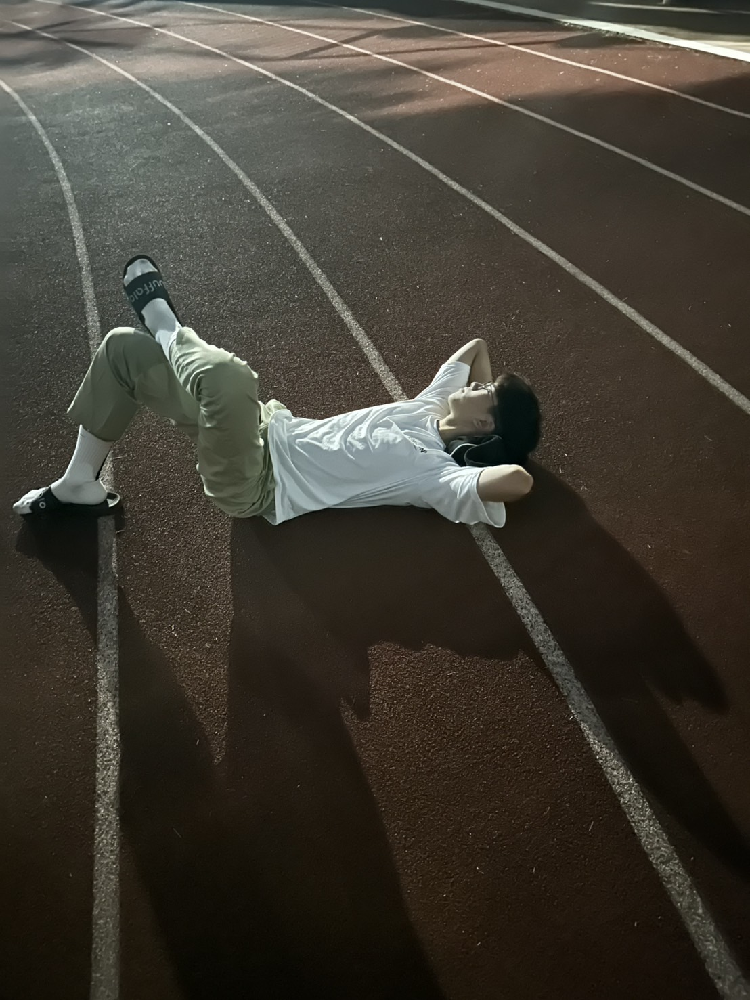

全國商業類技藝競賽
逐夢編程之路
01
WHY CHOOSE
為何選擇選手
就讀嘉義高商二年級的我，曾經對學業毫無興趣。然而，一次偶然的「網頁設計」課程，讓我意外發現自己對這門學科的濃厚興趣。
在隨後的專題競賽中，我付出努力並榮幸地獲得了第五名的成績。這次經驗不僅肯定了我的能力，也讓我更加篤定要在網頁設計的領域中深耕鑽研，挑戰更多的可能性。
在隨後的專題競賽中，我付出努力並榮幸地獲得了第五名的成績。這次經驗不僅肯定了我的能力，也讓我更加篤定要在網頁設計的領域中深耕鑽研，挑戰更多的可能性。
02
Player Selection
選手選拔
在一次因緣際會下，參加了校內網頁設計競賽，雖然最後只得到了第二名，但我在其中學習到了很多網頁相關的知識和語法，但這次比賽並不是直接決定技藝競賽選手，需要參加培訓
在後面的培訓中，我每天放學回家的第一件事就是開我的電腦練習版型，那時也都沒有心思在學業上，上課都是在看網頁相關的書籍，最後不枉費我的努力，成功取得嘉商網頁選手的資格，並且開始我的痛苦選手之路。
在後面的培訓中，我每天放學回家的第一件事就是開我的電腦練習版型，那時也都沒有心思在學業上，上課都是在看網頁相關的書籍，最後不枉費我的努力，成功取得嘉商網頁選手的資格，並且開始我的痛苦選手之路。
.png)
03
Training Progression
培訓過程

在一次因緣際會下，參加了校內網頁設計競賽，雖然最後只得到了第二名，但我在其中學習到了很多網頁相關的知識和語法，但這次比賽並不是直接決定技藝競賽選手，需要參加培訓
由於我是資處科的學生，我對於網頁版型設計一竅不通，我的指導老師是廣科的老師，但老師畫出來的版型與我網頁呈現出來常常無法相容，在期間也很常吵架，但幸好最後與指導老師達成一致的共識。

在剛選完校內選手的時候，我帶著既期待和興奮的心情進入選手室，由於班上有其他三個跟我一樣是技藝競賽的選手，所以我在選手室的時光是非常快樂的，在晚上的時候我們也會一起出去操場運動。
04
Contest Experience
競賽心得
在選手的這一路上，我對於網頁的「切版能力」有極大的進步，「程式碼能力」也更加精進，看著一路上做的作品，從一開始的不被看好、技術不成熟，到現在可以獨立做出完整的網頁，如今拿到金手第三名，這種成就感是文字無法形容的。
我在心靈上的方面也有所成長，向來情緒浮躁的我，在面對龐大的程式碼時，我總是告訴自己不能慌張，情緒上穩定很多。這次的比賽也讓我見到了技藝競賽這個大場面，認識了其他縣市的選手並且交流，這趟比賽收穫了許多！
我在心靈上的方面也有所成長，向來情緒浮躁的我，在面對龐大的程式碼時，我總是告訴自己不能慌張，情緒上穩定很多。這次的比賽也讓我見到了技藝競賽這個大場面，認識了其他縣市的選手並且交流，這趟比賽收穫了許多！